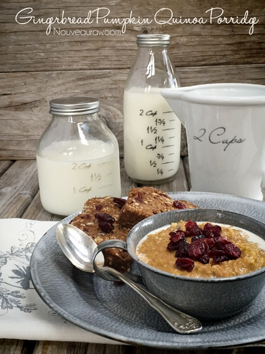
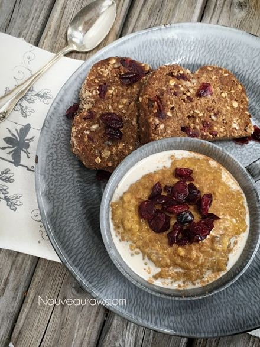

Gingerbread Pumpkin Quinoa Porridge

~ raw, vegan, gluten-free ~
I made this Gingerbread Pumpkin Breakfast Quinoa Porridge for my mom while I was visiting in Alaska this past summer. She is a lover of hearty breakfasts, so it brought me great joy to share this delicious dish with her.
Mom is always open to my experiments, which makes it so darn fun. The whole week that I stayed with Mom and Dad, I got on a quinoa kick. I made both savory and sweet dishes with it and wasn’t disappointed with any of them. We loved them all!
With the cooler weather upon us, this porridge satisfies your morning hunger and gives you those inner warm fuzzies!
Enjoy! Blessings, amie sue
Ingredients:
Yields 1 serving

Preparation:
Quinoa :
- You can use either cooked or sprouted quinoa. Regardless of whichever method you choose, you need to soak your quinoa for approx. 30 minutes. Then rinse it thoroughly until the water runs clear.
- To cook: bring 1 1/2 cups of water to a boil, add 1/2 cup of quinoa, bring water back up to a boil, cover, reduce heat and allow to simmer on low for 15 minutes. Remove from heat and let it sit for 5 minutes.
- To sprout: After the soak and rinse, place the quinoa in a bowl, cover with a dishcloth, let it sit it on the counter overnight, allowing the quinoa to sprout. In the morning you will notice tiny little tails on the quinoa, it is now ready.
Assembly:
- Combine all the ingredients and let it sit for 15 minutes. This will cause the chia seeds to expand, soaking up the extra liquid.
- Sprinkle the top with extra raisins and cinnamon.
- You can make this the night before, placing it in the fridge for the following morning’s breakfast!
- I find that the longer I allow raw food dishes to sit, the more the flavor of the ingredients meld together.
The Institute of Culinary Ingredients™
- To learn more about maple syrup by clicking (here).
- To learn more about Yacon syrup by clicking (here).
- Raw honey isn’t vegan, but I still use it now and again. Read (here) why I like to.
- Click (here) to learn why I use stevia.
- For easy directions on sprouting quinoa, check out these Sprouting Instructions from the Sproutpeople®.
- Why do I specify Ceylon cinnamon? Click (here) to learn why.
- What is Himalayan pink salt and does it really matter? Click (here) to read more about it.
© AmieSue.com